Phase-2 HLT, PU200, hltGeneralTracks. KF fit (default menu) vs mkFit fit (stock) vs this PR (Alpaka mkFit, GPU), ratio to the KF fit. All menus with the fine-grained tracker material. ttbar 2000 events, QCD 1000 events. Each plot also as PDF.
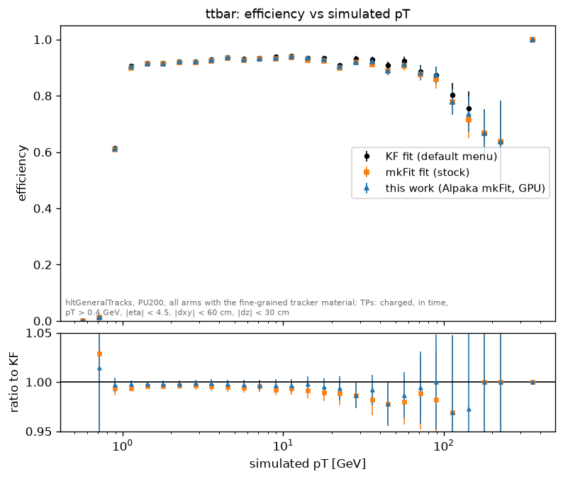
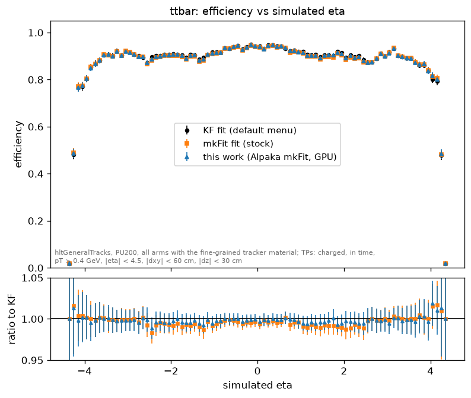
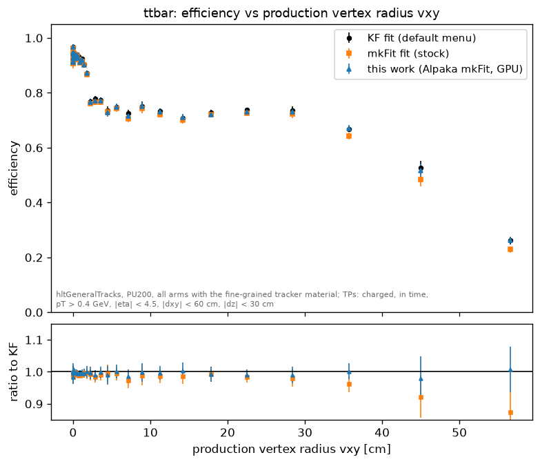
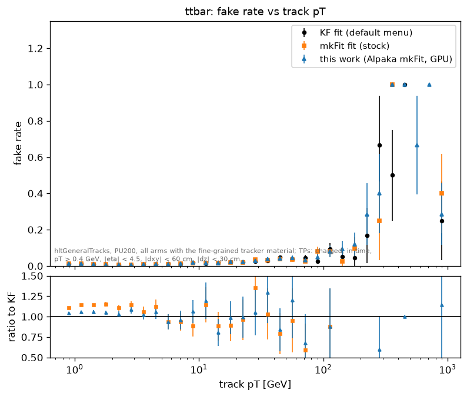
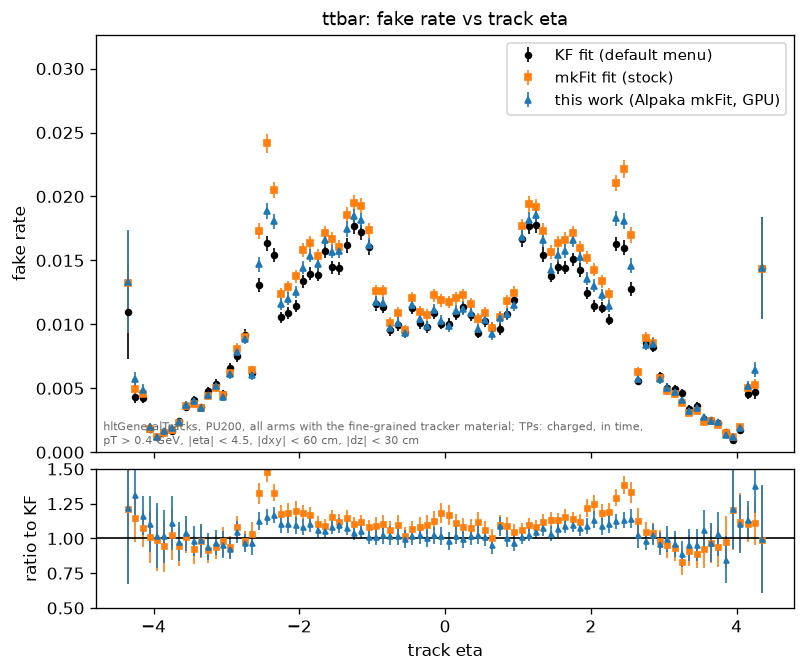
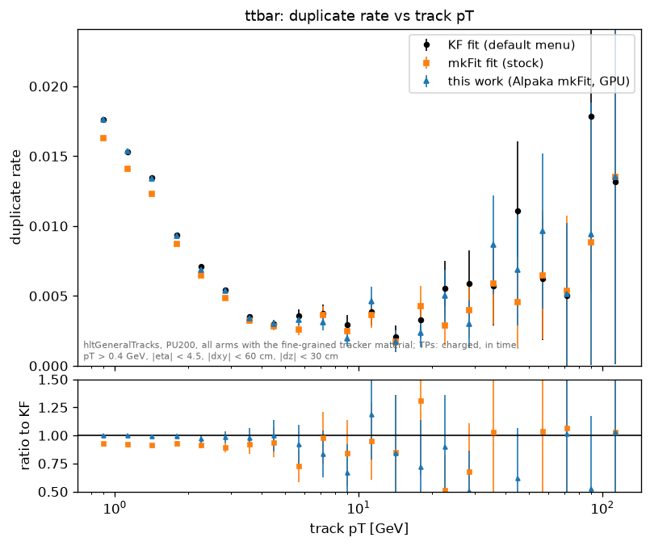
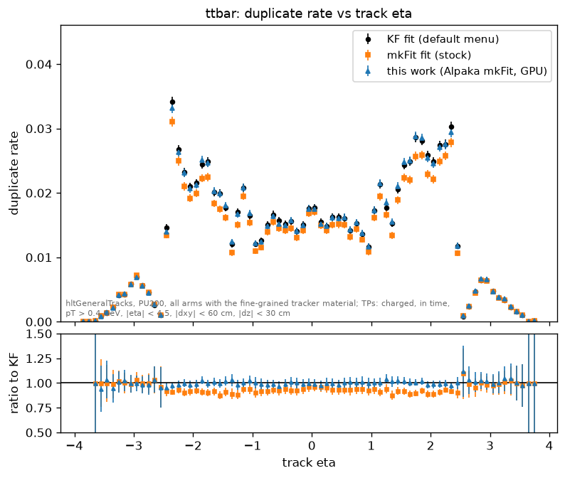
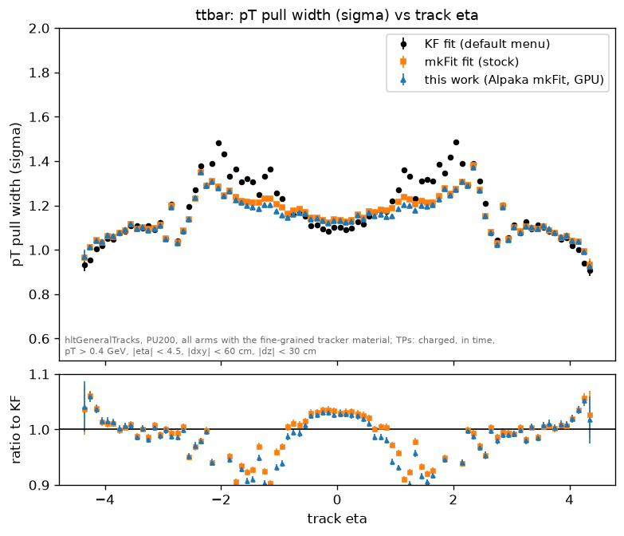
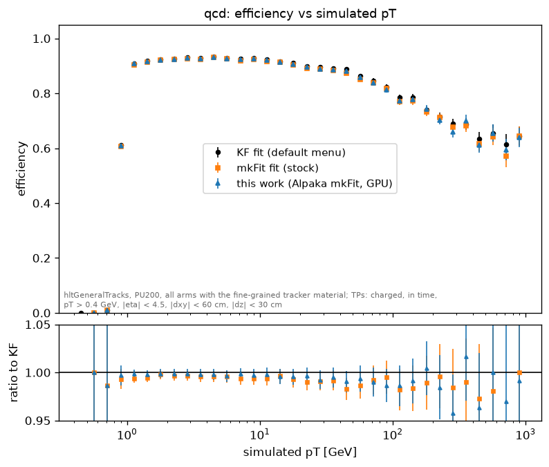
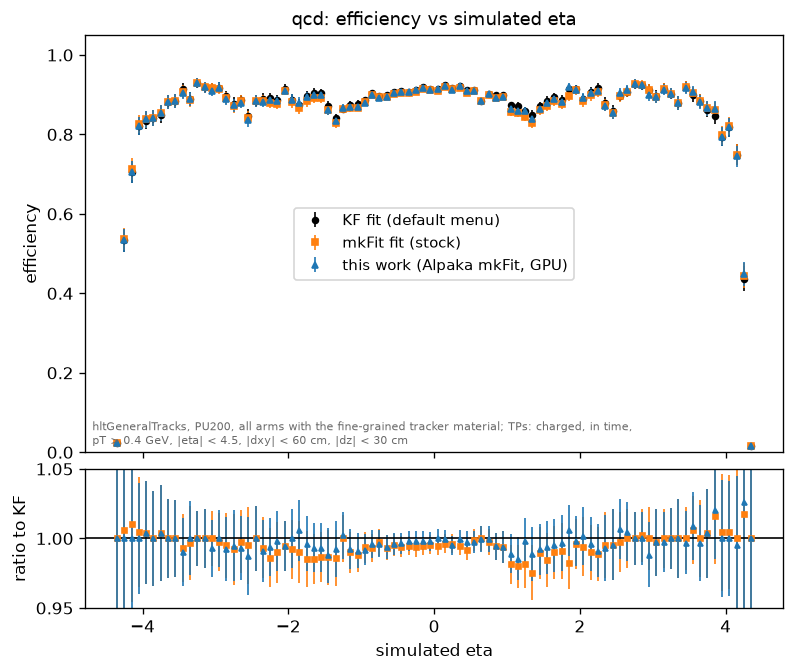
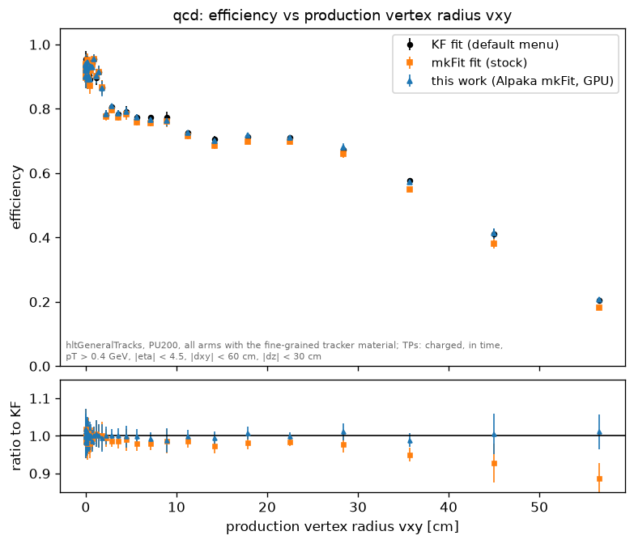
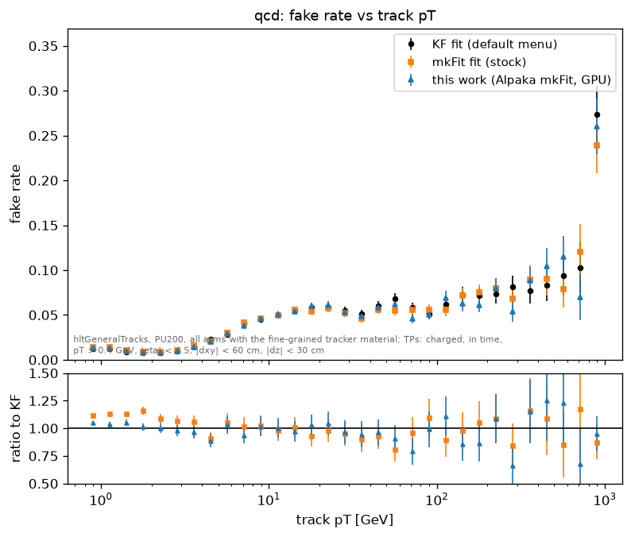
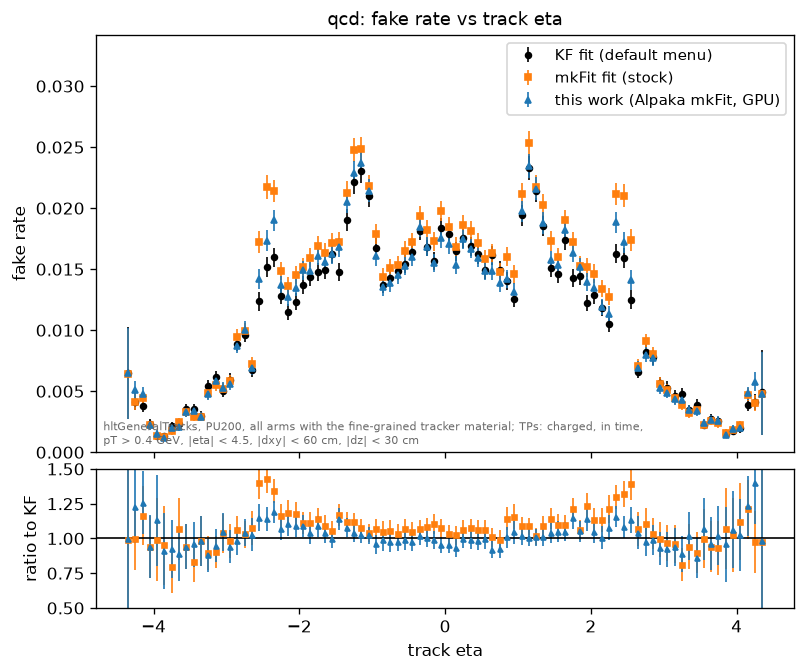
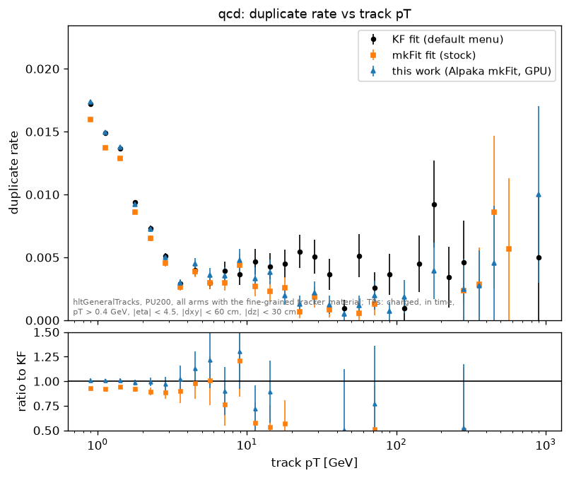
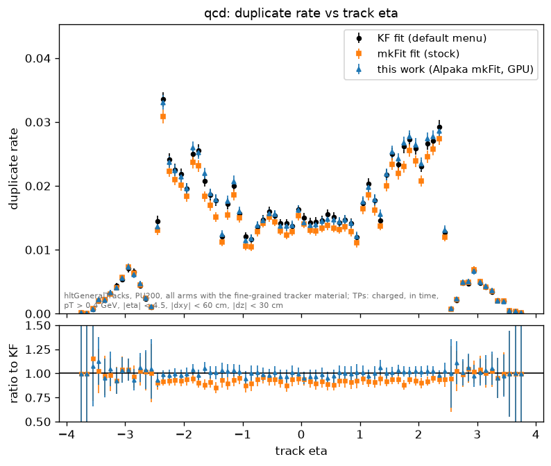
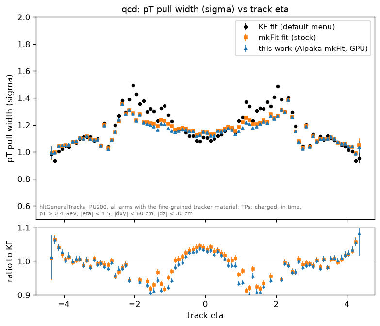